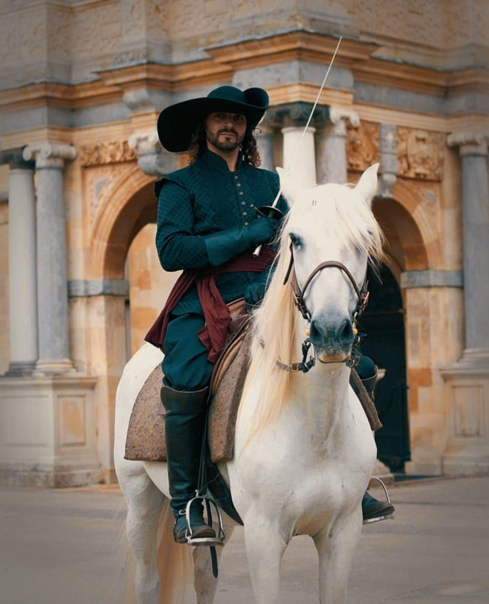
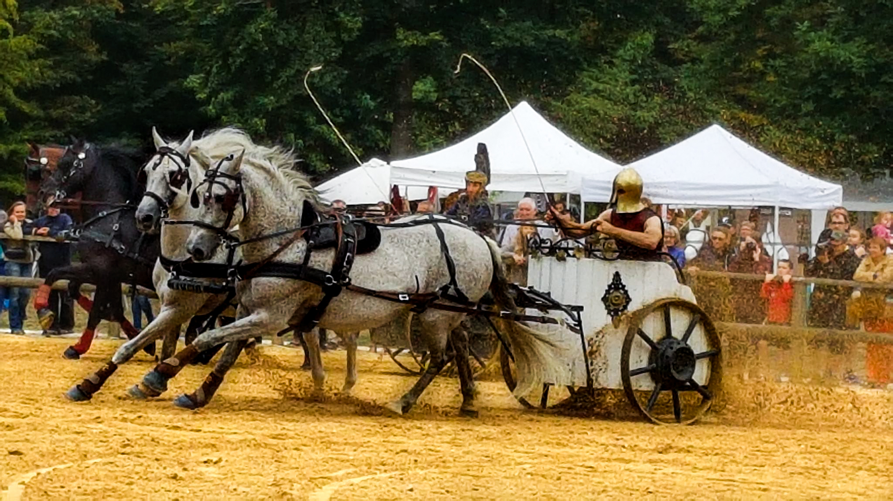
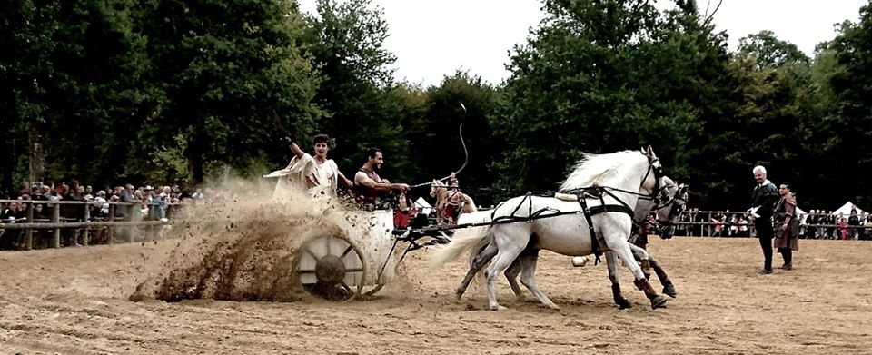
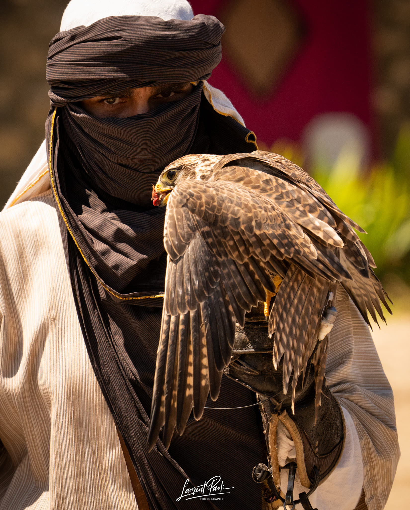
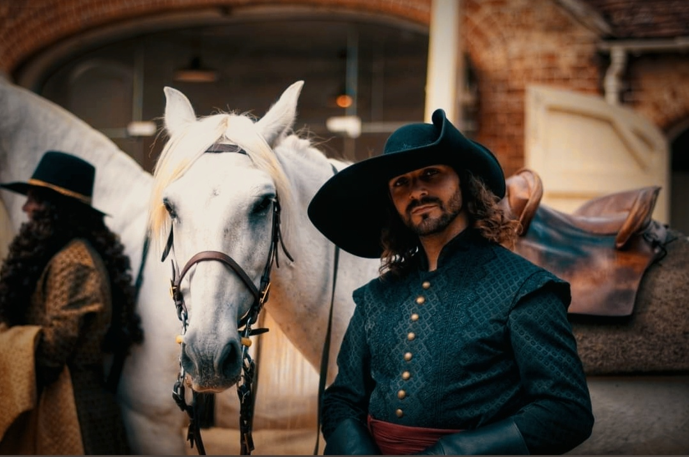

Enseignement, accompagnement et soins du cheval et du cavalier. Florian Poupin, enseignant diplômé.
"Transmettre l'art équestre dans sa noblesse originelle — la tradition française de De Pluvinel et La Guérinière — au service de la complicité entre le cavalier et son cheval."

Dressage Basse et Haute-École, sauts d'école, voltige cosaque — dans l'esprit de De Pluvinel et La Guérinière.
Explorer →
Joutes, jeux médiévaux, cheval de feu — l'équitation au service du grand spectacle vivant.
Explorer →
Simple, paire, tandem, troïka, quadrige — formé par Jean Fautras, grand meneur reconnu.
Explorer →
Formateur titulaire — affaitage, chasse au vol, spectacle. Ex-fauconnier du Grand Parc du Puy du Fou.
Explorer →
Chevalerie médiévale, archéologie expérimentale — périodes 1390-1415 et 1460-1480.
Explorer →Cavalier depuis l'âge de 6 ans, professionnel depuis 2010, Florian Poupin a forgé son art dans les plus grandes arènes : artiste et fauconnier au Puy du Fou, formé par Lucien Gruss et Jean Fautras.
Enseignant diplômé, il transmet aujourd'hui la tradition équestre française dans toute sa richesse — dressage, voltige cosaque, attelage, fauconnerie et arts du spectacle — en se déplaçant partout en France et à l'international.
Florian se déplace partout en France pour des cours réguliers ou des stages de 1 à plusieurs jours — des cursus d'excellence adaptés à tous les niveaux.
Ils témoignent
Sensible, à l'écoute, respectueux autant du cheval que du cavalier, Florian fait partie pour moi des enseignants qui ont instantanément cette capacité et la gentillesse de rassurer son élève, de prendre en charge ses inquiétudes et d'adapter son enseignement au besoin de la personne en face. Tout en simplicité et efficacité, c'est un accompagnement privilégié pour progresser dans un environnement humain d'une grande bienveillance dont le monde équestre a tellement besoin. Foncez les yeux fermés et vous vous surprendrez à avoir autant travaillé sur vous-même que sur votre cheval.
Florian n'est pas un enseignant mais un artiste de la transmission. Il sublime un cours en expérience inédite : celle d'une authentique rencontre avec son cheval. Florian réouvre le champ du possible et incline l'univers équin, devenu souvent impitoyable, avec douceur. Il offre des repères salvateurs, permettant d'asseoir une pratique contenante et progressive.
J'ai rencontré Florian dans un contexte inattendu, on pourrait dire un « heureux hasard ». Il m'a ouvert la porte de sa demeure, où s'assoient à sa table le cavalier, le poète, et l'historien. Avec autant de générosité que de patience, Florian m'a initié à cette relation au cheval qui nous le fait voir et sentir si différemment. Florian m'a permis de rencontrer un cheval. Rien ou si peu pour certains, ce fut pour moi fondateur. Et de loin le plus important. Le cheval n'est plus alors le moyen d'une ambition, mais une fin en soi.
J'ai découvert la voltige cosaque auprès de Florian. Si cette discipline m'intriguait au départ, j'y suis très vite devenue accro ! Florian nous a d'abord fait découvrir l'histoire des cosaques et des différentes figures, puis il nous a formés au vocabulaire. En seulement cinq cours, j'ai progressé à une vitesse incroyable ! Florian est une personne douce mais dynamique, motivante, digne de confiance et surtout très à l'écoute de ses élèves. Quel que soit le niveau ou les besoins de chacun, il s'adapte avec une facilité déconcertante. Merci, Florian, de nous avoir fait découvrir — et aimer — cette magnifique discipline à travers tes yeux de passionné.
Le hasard et la chance m'ont fait rencontrer Florian, une sorte d'OVNI dans le monde équestre actuel, ardent défenseur des temps où monter à cheval était un Art. Florian m'enseigne les bases indispensables pour développer une relation harmonieuse avec le cheval, sans contrainte ni force, en selle ou à pied. Avec passion, enthousiasme et une infinie patience. Merci Florian, Calme, avant, droit !
River et moi prenons des cours de travail à pied et en liberté avec Florian. J'apprécie particulièrement sa pédagogie : il prend le temps de comprendre chaque situation et d'expliquer clairement ses propositions, sans chercher à appliquer une méthode toute faite. Son approche est sérieuse et réfléchie, avec une réelle attention portée à la sécurité, autant pour le cavalier que pour le cheval. Toujours positif, Florian sait aussi dire les choses avec justesse. Les cours sont toujours constructifs, dans le respect du rythme de chacun.
Depuis que je prends des cours avec Florian, ma vision du cheval a totalement changé. C'est une personne profondément à l'écoute, qui nous guide avec bienveillance pour réellement comprendre notre cheval, ses réactions, ses émotions. Grâce à lui, j'ai appris bien plus qu'une simple technique : il m'a aidée à me faire confiance, à m'affirmer, tout en respectant profondément le bien-être équin. Avec Florian, on vit une vraie aventure de vie. Il ne juge jamais, il aide chacun à avancer à son rythme et à résoudre ses difficultés en profondeur. Je lui suis infiniment reconnaissante pour tout ce qu'il m'apporte.
J'ai eu la chance de découvrir la Voltige Cosaque avec Florian. Avant de démarrer, il nous a expliqué son histoire et pourquoi ces figures. C'est quelqu'un qui connaît parfaitement son sujet et le transmet avec passion. Je suis cavalière de complet donc complètement novice dans l'art de Florian. Cependant, avec tellement de simplicité et de bienveillance, il nous a donné envie de découvrir son monde. Travailler avec Florian est source d'enrichissements et il transmet son savoir avec passion et bienveillance.
Je vous recommande les cours avec Florian. Il est incroyable avec une approche respectueuse du cheval, il voit ses émotions et celles du cavalier. Les progrès sont là tout en douceur, dans la confiance ! Merci Florian, tu es une belle âme avec une parfaite connexion avec les chevaux.
Florian est très professionnel et passionné dans le domaine équestre. C'est toujours avec une grande motivation, des explications claires et dans la bonne humeur que nous faisons du travail à pied.
D'une très grande générosité, Florian n'hésite pas à prendre du temps afin de nous faire partager ses connaissances et compétences dans le milieu du spectacle équestre.
Cours individuels, stages, académies ou accompagnements sur mesure — discutons de votre projet équestre.